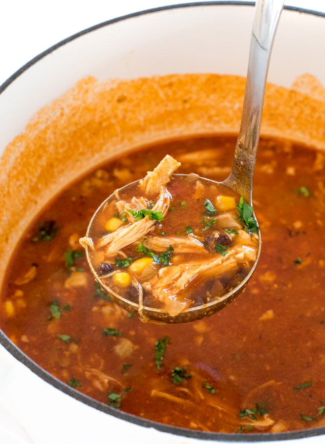

Chicken Tortilla Soup

Ingredients
- 1 tablespoon cooking oil
- 1 pound boneless skinless chicken breast
- 3/4 tsp. salt
- 1/2 tsp. pepper
- 2 cups water
- 1 1/2 cups chicken broth
- 14.5 ounce can fir roasted diced tomatoes with green chiles, undrained
- 11 ounce can whole corn, red and green peppers, drained
- 10 ounce can enchilada sauce
- 1 large onion, minced
- 1/2 teaspoon chili powder
- 4 cups tortilla chips, coarsely crushed
- 1/2 cup sour cream
Directions
Heat oil in skillet, sprinkle chicken with salt and pepper and brown on both sides. Place chicken in slow cooker. Add water, broth, tomatoes, corn, enchilada sauce, onion, and seasoning. Cover and cook on low setting for 4 hours or until chicken is tender. Remove chicken, shred, and return to broth. Cook 30 minutes longer. Top each serving with 1/2 cup crushed chips and 1 teaspoon sour cream.